Glossy, chunky and sunny, in the family of popular casual mobile games. Every surface is a toy you could press, and the real creatures — already chunky and big-eyed — look at home in it.
Concept only. Creature portraits are the game's real models; names, rarities, biomes and item titles are real; levels, counts and prices are illustrative. Backdrops, logos, icons and item art were generated for this study.
Three title treatments. In each, Geo Pets is the name and WORLD is at least as prominent, in different lettering — the globe letter, the hanging sign and the map-pin emblem. Two app icons keep the selected leaf-eared companion and redraw it in this style.
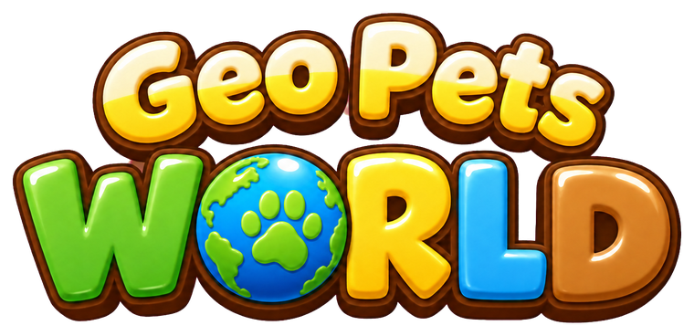
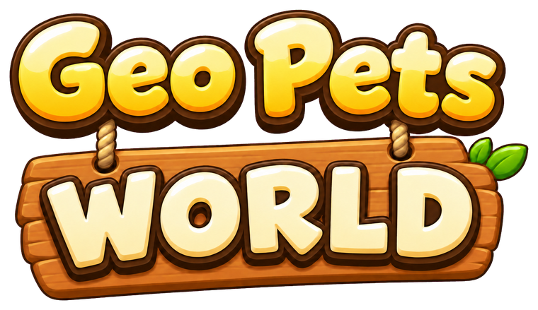
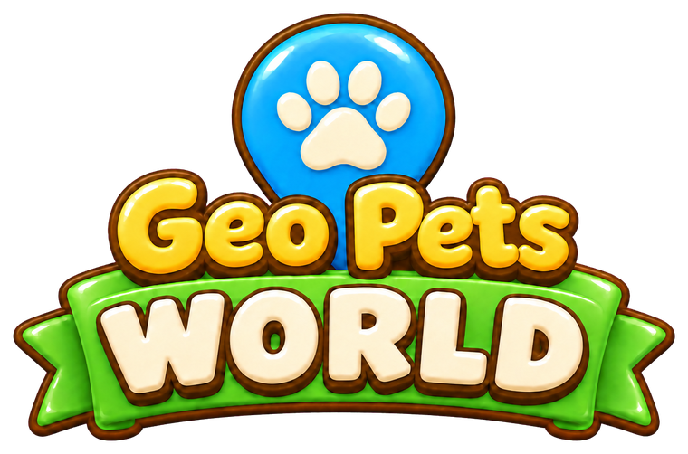
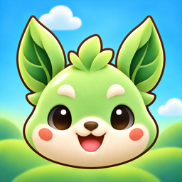
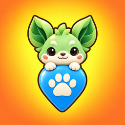
Each phone is exactly 390×844. Scroll sideways.
SplashThe title gets the sky; the account card becomes a toy slab with one obvious green button.
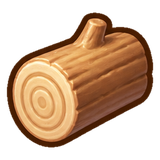
✓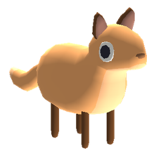
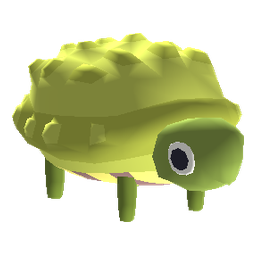
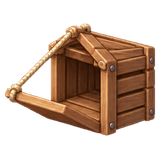
4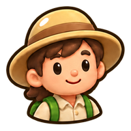
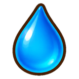
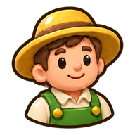
20World map and HUDThe game's real map, restyled. The roads, the rocky biome, the sea, the tree patch and the market stall are where they are in today's game; only the look has changed. Markers carry the creature on its biome colour with a rarity rim, clusters carry a count, a finished harvest gets a green tick, and the range line is the far arc it really is.
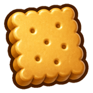
1:10HometownThe game's Hometown, restyled: the same five buildings, the props, the padlocked archway, the cloud blanket and the world below. Following today's decision that finished crafting is delivered automatically, nothing waits to be collected: working buildings show a timer, idle ones stay quiet instead of carrying a label, and goods arrive with a small notice.
Wildling collectionThe trophy shelf. Wood, blue and purple frames are common, uncommon and rare. The stage behind each Wildling is its biome. Missing ones wait as silhouettes; the Petal family shows its three stages as dots.
InventoryItems drawn as small prizes rather than outlined symbols, with the count where the thumb reads it first. The storage meter follows today's decision that the inventory has a capacity you can upgrade; whether materials and goods get separate limits is still open, so one is shown.
Confirmation popupWhat you get, how long it takes and what it costs, with the price on the button itself. Tapping outside still dismisses it.